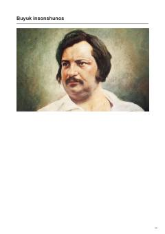

BIBuyuk fransuz yozuvchisi Onore de Balzakning hayoti va ijodiy merosi haqida biografik asar.
Ushbu asar buyuk fransuz yozuvchisi Onore de Balzakning hayoti va ijodiy yo'liga bag'ishlangan. Kitobda adibning mashhur "Inson komediyasi" epopeyasini yaratish jarayoni, uning adabiyot olamidagi o'rni va o'z davri jamiyatini tasvirlashdagi mahorati yoritilgan.